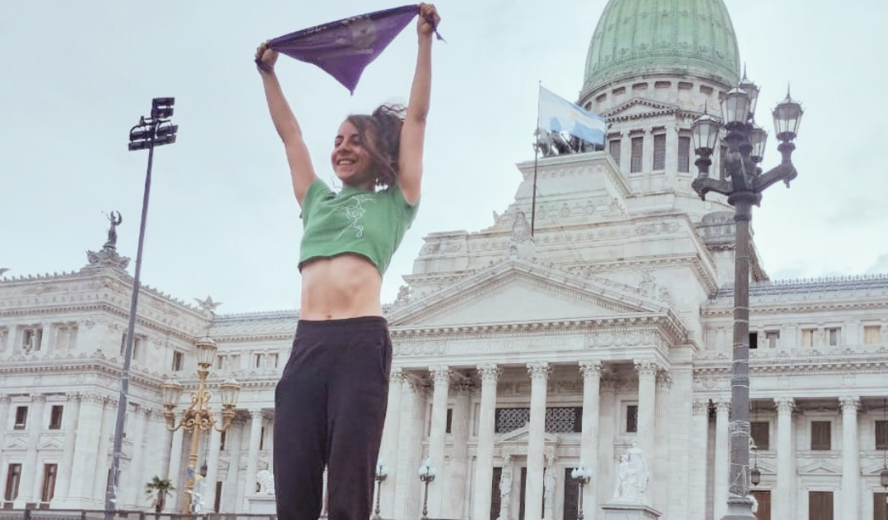
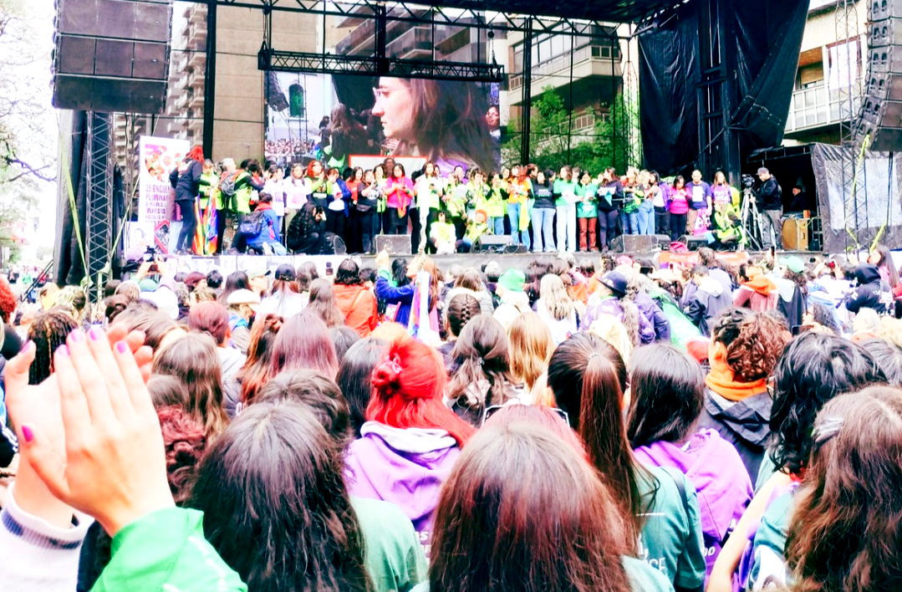

Hay quienes creen que las feministas solo hacen marchas y pintan paredes. Pero además de reclamar públicamente, organizaciones y activistas sostienen diferentes acciones de acompañamiento a quienes atraviesan situaciones de violencia de género. ¿Qué es acompañar? ¿Cuál es el rol del Estado en el abordaje y prevención de la violencia basada en género? ¿Y el de los activismos?
Este artículo presenta un breve recorrido sobre cómo los feminismos han incidido en las políticas públicas, de qué manera se sostienen los acompañamientos a personas en situación de violencia, y cuáles son los desafíos que tenemos por delante.
Breve historia de la lucha por el derecho a vivir sin violencia
Desde el retorno de la democracia, y en sintonía con lo que ocurría en otros países de la región, las activistas feministas argentinas empezaron a visibilizar la violencia en la pareja y en la familia. Como cuentan Débora Daich y Mónica Tarducci (2018), varias organizaciones armaron espacios de debates, para definir la problemática y elaborar diagnósticos. Se crearon grupos de ayuda mutua, refugios y otras acciones de cuidado y acompañamiento. Los feminismos se involucraron para la transformación de diversas leyes, como la de divorcio vincular, en 1987, y la ley de violencia familiar, en 1994, para que el Estado tuviera herramientas de intervención por fuera del régimen penal. También, en 1999, se modificaron los artículos del código penal vinculados a los delitos sexuales, que dejaron de llamarse delitos contra la honestidad (como si vivir una violación nos convirtiera en personas deshonestas).
El siglo XXI nos encontró en un clima de ampliación de los feminismos y su conjunción con movimientos populares, como explica Graciela Di Marco (2011). Las luchas populares fomentan la ampliación de derechos con la aprobación de diversas leyes, como las leyes de salud sexual, de ESI, y matrimonio igualitario, entre otras.

En 2009 se aprobó la Ley nacional Nº 26.485, de protección integral para prevenir, sancionar y erradicar la violencia contra las mujeres (2009). Años más tarde, la ley Micaela, de capacitación obligatoria sobre violencia de género al personal estatal (2018), y la ley 27.610 de aborto legal (2020), entre otras. En estas leyes incidieron los movimientos feministas y LGBT+, con participación en la elaboración de proyectos legislativos y movilización callejera. Simultáneamente, a lo largo de 30 años, se crearon diferentes organismos nacionales destinados a abordar las políticas hacia las mujeres y de género, como el Consejo Nacional de las Mujeres, el Instituto Nacional de las Mujeres y el Ministerio de las Mujeres, Géneros y Diversidad.
Mientras a nivel estatal se produjo entonces un proceso de incremento de la normativa y jerarquización de determinados organismos (Maffeo, 2026), a nivel social los movimientos se amplificaron y llevaron los debates en las plazas, en las casas y en las camas: ¿Quién lava los platos? ¿Quiénes toman las decisiones? ¿Cómo construimos otras relaciones?
Sin embargo, ese camino de derechos obtenidos, que el Estado debe garantizar, hoy está en riesgo…
"Se pasaron tres pueblos"
Estas palabras, pronunciadas por el presidente Javier Milei, en el Foro Económico Mundial de Davos, en enero de 2025, son mucho más que un discurso "anti-woke". Son la enunciación de una política de Estado que reduce el presupuesto de las políticas públicas, en particular de las políticas de abordaje de la violencia de género, a montos ínfimos.
Según el informe de la Equipo Latinoamericano de Justicia y Género (ELA), el proyecto de presupuesto 2027 continúa el ajuste iniciado en el 2024. Dicho informe, que detalla diferentes políticas de género, muestra el virtual desmantelamiento del Programa Acompañar de los últimos tres años, con una reducción del 90%, y una disminución del presupuesto para el funcionamiento de la línea 144, que asesora sobre situaciones de violencia. El ajuste va de la mano con el cierre de organismos especializados, y el traslado de las políticas de asistencia a personas en situación de violencia al ámbito del ministerio de Justicia, en línea con una perspectiva de abordaje meramente legal.
Nos enfrentamos a un contexto sumamente hostil. Si bien las políticas de género han tenido sus vaivenes a lo largo de los años, como analizan Claudia Anzorena y Paulina Serú (2025), el hasta ahora inédito desfinanciamiento y cierre de organismos estatales deja a las mujeres, infancias, lesbianas, travestis y otras identidades disidentes a la deriva ante la violencia sexista creciente.
Mientras tanto, la provocación del gobierno nacional contra los feminismos es constante: cambiaron el nombre del salón de las mujeres de Casa Rosada el 8 de marzo de 2024; propusieron el debate en el Senado de un proyecto de falsas denuncias por situaciones de violencia, el pasado 26 de noviembre, tras el día de eliminación de la violencia contra las mujeres. Esto se combina con el repudio público que hacen los sectores de las ultraderechas reaccionarias (y también de algunas alas del denominado "campo popular"), que arengan discursos de odio, con efectos concretos: el triple lesbicidio de Barracas ocurrido en mayo del 2024, y transfóbico ejecutado en los bosques de Palermo en noviembre de este año, por nombrar solo dos ejemplos.
¿Qué hacemos entonces?
Acompañar para transformar
La lucha feminista es todoterreno y excede a la demanda al Estado. Desde hace décadas que el trabajo de las organizaciones de mujeres y feministas es amplio y diverso. Se trata de un movimiento que actúa y se piensa a sí mismo, reflexiona y busca la transformación social. Esto se hace desde los más diversos ámbitos: escolares, de salud, académicos, comunitarios, artísticos y comunicacionales.
Las activistas no solo están en las calles reclamando en fechas específicas. En el día a día, decenas de organizaciones en diferentes partes del país acompañan a personas en situación de violencia. El acompañamiento implica escuchar activamente, desnaturalizar las violencias, hacer asesoramientos estratégicos, facilitar la gestión de recursos legales y asistenciales, y fortalecer las redes comunitarias.

El acompañamiento, como práctica política feminista, define modelos de abordaje creados que se realizan desde una ética del cuidado, tanto hacia las personas acompañadas como entre activistas. Además, nos permite a las organizaciones y activistas construir nuevos sentidos que procuran legitimarse, a partir de la experiencia, y da lugar a la producción de un conocimiento situado, elaborado a partir de una reflexión sobre la experiencia personal. Este proceso no pretende llegar a una verdad universal, sino a una conciencia que devenga en acción política, tal como explica Ana María Bach (2010).
Asimismo, los acompañamientos son también una práctica de incidencia política, que refuerza el derecho a vivir una vida libre de violencia y abona a la transformación de las relaciones de poder. Porque siempre se piensa a cada persona acompañada como un sujeto político y como una potencial multiplicadora de los feminismos.
¿Cómo seguimos? Algunos desafíos a futuro
Como dice Sara Ahmed (2021), las feministas nos hemos acostumbrado al inconformismo, a ser las aguafiestas. El panorama puede ser desalentador, pero nuestro deseo de cambiarlo todo se sostiene. Algunos desafíos colectivos por delante son:
1) Reconstruir los entramados colectivos y valorizar las prácticas militantes de construcción colectiva y comunitaria
Ante el desmantelamiento del Estado y el ajuste de presupuestos y políticas públicas, tenemos el desafío fortalecer nuestras articulaciones y desarrollar estrategias de acompañamiento mutuas e intersectoriales. Por nombrar algunos ejemplos, desde la universidad, profundizar la investigación y la coproducción de saberes; desde las organizaciones, construir espacios comunitarios y territoriales, avanzar en la profundización de redes y en la formación política; desde los sindicatos, articular demandas con otras organizaciones.
Esto nos permite fortalecer el trabajo de los diferentes actores sociales, potenciar intervenciones y vencer la sensación de que lo que hacemos cae en saco roto todo el tiempo.
2) Escuchar más y producir nuevos discursos
Las resistencias ante el avance de los discursos de odio no solo se sostienen con trincheras entre los propios. ¿Qué interpretaciones sobre la violencia circulan? ¿Hay discursos más violentos o mayor circulación y repercusión de estos? ¿Qué espacio ocupa el territorio digital en estas tramas de sociabilidad? ¿Cómo interpelar a otro público que no transita en nuestros mismos espacios?
Atender a las inquietudes emergentes puede ser una pista a seguir para elaborar discursos creativos que interpelen a otros públicos.
3) Acompañarnos frente a las violencias múltiples
¿Y cómo hacemos para acompañar a otras personas? Primero, escucha sin juzgar. Segundo, ayuda a buscar información y ubica espacio dedicados a la temática. No siempre lo primero es denunciar, sino que esta es una herramienta más, que debe ser tenida en cuenta en una estrategia. Hay muchas organizaciones sociales y también organismos de atención especializados (si, varios siguen en pie), que pueden brindar información y asesoramiento legal y terapéutico. Y nunca olvidar que los acompañamientos son colectivos.
Otro desafío es acompañar a quienes acompañan. La mayoría de las trabajadoras que quedan en organismos estatales tienen sobrecarga de trabajo precarizado. Otras activistas hacen acompañamientos de forma gratuita desde sus organizaciones. Esta tarea puede ser sumamente agotadora y desgastante. Un matecito y un abrazo pueden ser un refugio para quienes sostienen en contextos tan hostiles.
4) Fortalecer las redes y poner a jugar la imaginación colectiva
Ante el bombardeo permanente de discursos neoconservadores y de responsabilización individual, ante la precarización de la vida, sabernos como parte de un colectivo es fundamental. Juntarse porque si, a charlar, a llorar a reírse, a bailar. "Si no puedo bailar, no es mi revolución" dice la frase atribuida a Emma Goldman. Probemos dejar las distopías que habitamos de lado por un rato e imaginemos los futuros que queremos vivir.
Armar entramados para sostenernos comunitariamente es una tarea fundamental para construir otros futuros posibles, y recuperar nuestros horizontes transformadores. Solo así podremos fortalecernos y continuar en acción.
Referencias bibliográficas
- Ahmed, S. (2021). Vivir una vida feminista. Caja Negra Editora.
- Anzorena, C., y Serú, P. (2026). El principal mecanismo institucional de género en Argentina: De la consolidación al desmantelamiento. Íconos - Revista de Ciencias Sociales, (84), 37-58. https://doi.org/10.17141/iconos.84.2026.6789
- Bach, A. M. (2010). Las voces de la experiencia: El viraje de la filosofía feminista (1. ed). Biblos.
- Daich, D., y Tarducci, M. (2018). Mujeres y feminismos en movimiento. Politizaciones de la vida cotidiana. Editorial de la Facultad de Filosofía y Letras Universidad de Buenos Aires.
- Di Marco, G. (2011). El pueblo feminista. Movimientos sociales y lucha de las mujeres en torno a la ciudadanía. Editorial Biblos.
- Equipo Latinoamericano de Justicia y Género. (2026). Análisis del Proyecto de Presupuesto 2027—Informe del Equipo Latinoamericano de Justicia y Género. Equipo Latinoamericano de Justicia y Género. https://ela.org.ar/wp-content/uploads/2026/10/Analisis-del-Proyecto-de-Presupesto-2027-Informe-del-Equipo-Latinoamericano-de-Justicia-y-Genero.pdf
- Maffeo, F. (2026). De leyes, organismos y activismos feministas: La construcción estatal del abordaje de la violencia de género en Argentina (1983-2023). Pacha. Revista de Estudios Contemporáneos del Sur Global, 7(20). https://doi.org/10.46652/pacha.v7i20.537
- MuMaLa - Mujeres de la Matria Latinoamericana. Feminismo Popular, Federal y Disidente. (2025). Registro de Femicidios, Femicidios Vinculados, Trans/Travesticidios, Lesbicidios, Femicidios por narcotráfico/crimen organizado, Suicidios feminicidas y otras Muertes violentas del Observatorio Nacional MuMaLa. Año 2025. Observatorio Nacional MuMaLa.